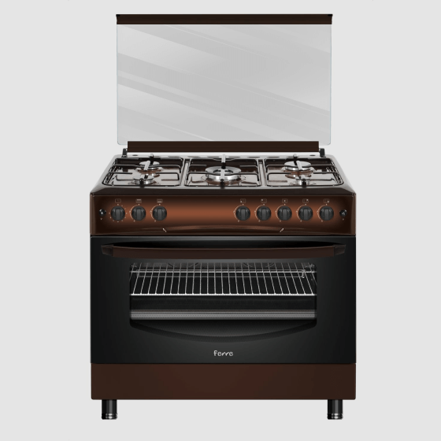

Plitalar

Stol usti pishirish paneli
O'rnatilgan pechlar

1978 yilda beri barqaror rivojlanish funksionallik, samaradorlik va zamonaviy dizaynni mukammal uyg'unlikda birlashtirgan Ferre dunyosiga xush kelibsiz.
Har bir milliy taomning o'ziga xosligiga kelsak, biz o'z sa'y- harakatlarimiz va innovatsion g'oyalarimizni kerakli noyob ta'mga ega bo'lish uchun to'g'ri tanlashnni ta'minlashga qaratamiz.
Zamonaviy dizayn va eng so'nggi texnologiyalar uyg'unligi Ferre pishirgichlarning har bir detalini ishlab chiqish uchun asosdir. Uzluksiz rivojlanish natijasida biz har qanday oshxona uslubiga va har qanday individual oshpazning talabiga mos modellar, funksiyalar, o'lchamlar va ranglarning katta assortimentini ishlab chiqdik.
Ferre mahsulotlarining keng assortimenti bo'sh joydan unumli foydalanish va oshxonangizga nafislik kiritish imkonini beradi.
Turkiyaning Istanbuldagi savdo bazasi va mamlakatning yetakchi tarmoqlaridan biri bo'lgan. Markaziy Anadoluning sanoat markazi Kayserida joylashgan. FEMAS GROUP - 170 000 m2 va jami 100 000 m2 yopiq maydonga ega xalqaro kompaniya.